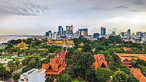

Economy of Cambodia
|  Phnom Penh, the capital and largest city of Cambodia | |
| Currency | Riel (KHR, ៛) |
|---|---|
| Calendar year | |
Trade organisations | WTO, ASEAN, AFTA, RCEP, SCO, G77 |
Country group |
|
| Statistics | |
| Population | |
| GDP | |
| GDP rank | |
GDP growth |
|
GDP per capita | |
GDP per capita rank | |
GDP by sector |
|
| 2% (2023 est.)[4] | |
Population below poverty line |
|
| 23.6 medium (2024)[9] | |
Labour force | |
Labour force by occupation |
|
| Unemployment |
|
Main industries | tourism, garments, construction, rice milling, fishing, wood and wood products, rubber, cement, gem mining, textiles |
| External | |
| Exports | |
Export goods | clothing, precious metal scraps, trunks/cases, gold, leather footwear |
Main export partners |
|
| Imports | |
Import goods | refined petroleum, clothing, gold, cars, flavored water |
Main import partners | |
FDI stock |
|
Gross external debt | |
| Public finances | |
| −3.5% (of GDP) (2024 est.)[6] | |
| Revenues | $6.2 billion (2023 est.)[6] |
| Expenses | $7.4 billion (2023 est.)[6] |
| Economic aid | $934 million pledged in grants and concessional loans for 2011 by international donors |
| |
All values, unless otherwise stated, are in US dollars. | |
{kind=link}
| History of Cambodia |
|---|
| Early history |
| Post-Angkor period |
| Colonial period |
| Independence and conflict |
| Peace process |
| Modern Cambodia |
| By topic |
| Cambodia portal |
{kind=link}
The economy of Cambodia (Khmer: សេដ្ឋកិច្ចនៃកម្ពុជា [setʰakəc nəj kampuciə]) currently follows an open market system (market economy) and has seen rapid economic progress in the last decade.[17] Cambodia had a gross domestic product (GDP) of $28.54 billion in 2022.[18] Per capita income, although rapidly increasing, is low compared with most neighboring countries. Cambodia's two largest industries are textiles and tourism, while agricultural activities remain the main source of income for many Cambodians living in rural areas.[19] The service sector is heavily concentrated on trading activities and catering-related services. Recently, Cambodia has reported that oil and natural gas reserves have been found off-shore.[20]
In 1995, with a GDP of $2.92 billion[21] the Cambodian government transformed the country's economic system from a planned economy to its present market-driven system.[22] Following those changes, growth was estimated at a value of 7% while inflation dropped from 26% in 1994 to only 6% in 1995. Imports increased due to the influx of foreign aid, and exports, particularly from the country's garment industry, also increased. Although there was a constant economic growth, this growth translated to only about 0.71% for the ASEAN economy in 2016, compared with her neighbor Indonesia, which contributed 37.62%.[23]
After four years of improving economic performance, Cambodia's economy slowed in 1997–1998 due to the regional economic crisis, civil unrest, and political infighting. Foreign investments declined during this period. Also, in 1998 the main harvest was hit by drought. But in 1999, the first full year of relative peace in 30 years, progress was made on economic reforms and growth resumed at 4%.
Currently, Cambodia's foreign policy focuses on establishing friendly borders with its neighbors (such as Thailand and Vietnam), as well as integrating itself into regional (ASEAN) and global (WTO) trading systems. Some of the obstacles faced by this emerging economy are the need for a better education system and the lack of a skilled workforce; particularly in the poverty-ridden countryside, which struggles with inadequate basic infrastructure. Nonetheless, Cambodia continues to attract investors because of its low wages, plentiful labor, proximity to Asian raw materials, and favorable tax treatment.[24]
Recent economic history
[edit]Following its independence from France in 1953, the Cambodian state has undergone five periods of political, social, and economic transformation:
- First Kingdom of Cambodia (1953–1970)
- Khmer Republic (1970–1975)
- Democratic Kampuchea (1975–1982, ousted in 1979); became Coalition Government of Democratic Kampuchea in exile (1982–1993)
- People's Republic of Kampuchea (1979–1989), later renamed "State of Cambodia" (1989–1993)
- Second Kingdom of Cambodia (1993–present)
In 1989, the State of Cambodia implemented reform policies that transformed the Cambodian economic system from a command economy to an open market one.[25] In line with the economic reformation, private property rights were introduced and state-owned enterprises were privatized. Cambodia also focused on integrating itself into regional and international economic blocs, such as the Association of South East Asian Nations and the World Trade Organization respectively. These policies triggered a growth in the economy, with its national GDP growing at an average of 6.1% before a period of domestic unrest and regional economic instability in 1997 (1997 Asian financial crisis).[25] However, conditions improved and since 1999, the Cambodian economy has continued to grow at an average pace of approximately 6–8% per annum.[26]
In 2007, Cambodia's gross domestic product grew by an estimated 18.6%. Garment exports rose by almost 8%, while tourist arrivals increased by nearly 35%. With exports decreasing, the 2007 GDP growth was driven largely by consumption and investment. Foreign direct investment (FDI) inflows reached US$600 million (7 percent of GDP), slightly more than what the country received in official aid. Domestic investment, driven largely by the private sector, accounted for 23.4 percent of GDP. Export growth, especially to the US, began to slow in late 2007 accompanied by stiffer competition from Vietnam and emerging risks (a slowdown in the US economy and lifting of safeguards on China's exports). US companies were the fifth largest investors in Cambodia, with more than $1.2 billion in investments over the period 1997–2007.
Cambodia was severely damaged by the financial crisis of 2007–2008, and its main economic sector, the garment industry, suffered a 23% drop in exports to the United States and Europe.[27] As a result, 60,000 workers were laid off. However, in the last quarter of 2009 and early 2010, conditions were beginning to improve and the Cambodian economy began to recover. Cambodian exports to the US for the first 11 months of 2012 reached $2.49 billion, a 1 per cent increase year-on-year. Its imports of US goods grew 26 per cent for that period, reaching $213 million. Another factor underscoring the potential of the Cambodian economy is the recent halving of its poverty rate. The poverty rate is 20.5 per cent, meaning that approximately 2.8 million people live below the poverty line.
{kind=link}
Data
[edit]The following table shows the main economic indicators in 1986–2020 (with IMF staff estimates in 2021–2026).[28] Inflation below 5% is in green. The annual unemployment rate is extracted from the World Bank, although the International Monetary Fund find them unreliable.[29]
| Year | GDP
(in Bil. US$PPP) |
GDP per capita
(in US$ PPP) |
GDP
(in Bil. US$nominal) |
GDP per capita
(in US$ nominal) |
GDP growth
(real) |
Inflation rate
(in Percent) |
Unemployment[29]
(in Percent) |
Government debt
(in % of GDP) |
|---|---|---|---|---|---|---|---|---|
| 1986 | n/a | n/a | 0.2 | 25.71 | n/a | n/a | n/a | n/a |
| 1987 | 4.3 | 516.02 | n/a | n/a | n/a | |||
| 1988 | n/a | n/a | ||||||
| 1989 | n/a | n/a | ||||||
| 1990 | n/a | n/a | ||||||
| 1991 | 0.7% | n/a | ||||||
| 1992 | n/a | |||||||
| 1993 | n/a | |||||||
| 1994 | n/a | |||||||
| 1995 | n/a | |||||||
| 1996 | 30.2% | |||||||
| 1997 | ||||||||
| 1998 | ||||||||
| 1999 | ||||||||
| 2000 | ||||||||
| 2001 | ||||||||
| 2002 | ||||||||
| 2003 | ||||||||
| 2004 | ||||||||
| 2005 | ||||||||
| 2006 | ||||||||
| 2007 | ||||||||
| 2008 | ||||||||
| 2009 | ||||||||
| 2010 | ||||||||
| 2011 | ||||||||
| 2012 | ||||||||
| 2013 | ||||||||
| 2014 | ||||||||
| 2015 | ||||||||
| 2016 | ||||||||
| 2017 | ||||||||
| 2018 | ||||||||
| 2019 | ||||||||
| 2020 | ||||||||
| 2021 | n/a | |||||||
| 2022 | n/a | |||||||
| 2023 | n/a | |||||||
| 2024 | n/a | |||||||
| 2025 | n/a | |||||||
| 2026 | n/a |
Economic sectors
[edit]Garment industry
[edit]The garment industry represents the largest portion of Cambodia's manufacturing sector, accounting for 80% of the country's exports. In 2012, the exports grew to $4.61 billion up 8% over 2011. In the first half of 2013, the garment industry reported exports worth $1.56 billion.[30] The sector employs 335,400 workers, of which 91% are female.
The sector operates largely on the final phase of garment production, that is turning yarns and fabrics into garments, as the country lacks a strong textile manufacturing base. In 2005, there were fears that the end of the Multi Fibre Arrangement would threaten Cambodia's garment industry; exposing it to stiff competition with China's strong manufacturing capabilities.[31] On the contrary, Cambodia's garment industry at present continues to grow rapidly. This is can be attributed to the country's open economic policy which has drawn in large amounts of foreign investment into this sector of the economy.
Garment Factories by Ownership Nationality in 2010:[32]
| Nationality of Ownership | Ownership by percentage | Number of factories owned |
|---|---|---|
| Taiwan | 28% | 66 |
| China | 19% | 44 |
| Hong Kong | 17% | 39 |
| South Korea | 13% | 31 |
| Malaysia | 6% | 14 |
| Cambodia | 5% | 13 |
| Singapore | 4% | 10 |
| USA | 4% | 9 |
| Others | 4% | 10 |
{kind=link}
In 2010, 236 garment export-oriented factories were operating and registered with GMAC, the Garment Manufacturers Association in Cambodia, with 93% being foreign direct investment (FDI).
As seen in the table above, Cambodia's garment industry is characterized by a small percentage of local ownership. This is a reflection of the deficiency of skilled workers in the country as well as the limited leverage and autonomy Cambodian factories have in strategic decisions.[33] Another characteristic of the industry is the country's competitive advantage as the only country where garment factories are monitored and reported according to national and international standards.[34]
This has allowed Cambodia to secure its share of quotas for exports to the US through the US-Cambodia Trade Agreement on Textiles and Apparel (1999–2004), which linked market access to labor standards. However, the Cambodian garment industry remains vulnerable to global competition due to a lack of adequate infrastructure, labor unrest, the absence of a domestic textile industry, and almost complete dependence on imported textile material.[35]
GMAC is establishing a specialized training institute to train garment workers. The institute is in Phnom Penh Special Economic Zone and will be completed by late 2016.[needs update] It aims to train 1,600 garment workers in the first three years and 240 university students each year as part of a separate program.[36]
Agriculture
[edit]{kind=link}
Agriculture is the traditional mainstay of the Cambodian economy. Agriculture accounted for 90 percent of GDP in 1985 and employed approximately 80 percent of the work force. Rice is the principal commodity.
Major secondary crops include maize, cassava, sweet potatoes, groundnuts, soybeans, sesame seeds, dry beans, and rubber. The principal commercial crop is rubber. In the 1980s it was an important primary commodity, second only to rice, and one of the country's few sources of foreign exchange.
Tourism
[edit]In the 1960s, Cambodia was a prominent tourist destination in the Southeast Asian region. Due to protracted periods of civil war, insurgencies, and especially the genocidal regime of the Khmer Rouge (see Khmer Rouge Genocide), Cambodia's tourism industry was reduced to being virtually non-existent. Since the late 1990s, tourism is fast becoming Cambodia's second largest industry, just behind the garment manufacturing.[37] In 2006, Cambodia's tourism sector generated a revenue of US$1.594 billion, which made up approximately 16% of the country's GDP.[37]
{kind=link}
Cultural heritage tourism is especially popular in the country, with many foreign tourists visiting the ancient Hindu temple of Angkor Wat located in the Siem Reap province. Other popular tourist attractions include the Royal Palace, Phnom Penh, as well as ecotourism spots such as Tonlé Sap Lake and the Mekong River.
The tourism industry in Cambodia has been perpetuated by the development of important transportation infrastructure; in particular Cambodia's two international airports in Phnom Penh and Siem Reap respectively. To the Cambodian economy, tourism has been a means for the accumulation of foreign currency earnings and employment for the Cambodian workforce, with about 250,000 jobs generated in 2006.[37] Meanwhile, challenges to the industry include leakage of revenue to foreign markets due to a dependence on foreign goods as well as the prevalence of the Child sex tourism industry.[38]
Gambling industry
[edit].jpg){kind=link}
Gambling in Cambodia is officially illegal under the 1996 Law on Suppression of Gambling, which outlawed all unauthorized forms of gambling and provided for penalties ranging from monetary fines to short prison sentences, although the Cambodian government's General Department of Prisons does not list gambling as one of the 28 offenses punishable by imprisonment.[39]
The prohibition on gambling, which also extends to all forms of online gambling, only applies to Cambodian citizens. As of October 2015, there were 75 casinos catering to foreign tourists operating within Cambodia, providing an estimated US$29 million in revenue to the national government in the first nine months of the year and $2 billion in income for the casinos. Cambodian citizens are allowed to gamble through government sponsored gaming including five separate privately run national lotteries.[40] Cambodians were also previously permitted to play the slot machines located in the nation's casinos, however due to complaints of violence related to gambling debts and widespread problem gambling, slot machines were banned in 2009.[41]
Gambling as a popular pastime is ingrained in Southeast Asian culture in general and Cambodian culture in particular. Men who don't gamble are often viewed as not masculine.[42] Consequently, despite the laws against citizens gambling, illegal gambling is widespread in Cambodia. The police forces in Cambodia, ruled by one of the most corrupt governments in the world,[43] often look the other way as casinos freely allow locals to enter and provide private rooms for government and law enforcement officials, who oftentimes have a vested financial interest in the casinos, to conduct illegal gambling.[44]
Extralegal activities are also widespread outside of the permitted casinos ranging from cockfights and card rooms to sports book (primarily regional football and Kun Khmer matches) and unauthorized lotteries. Most of these activities are controlled by organized crime and protected by bribes to law enforcement.[45]
A number of societal issues plague Cambodia as a result of gambling, most notably gambling addiction.{kind=link}
Construction
[edit]The increase in tourist arrivals has led to growing demand for hotels and other forms of accommodation surrounding tourist hotspots. Siem Reap in particular has seen a construction boom in recent years. The capital Phnom Penh has also witnessed a growth in the construction and real estate sectors. Recently, planned projects that have been on the pipeline for several years have been shelved temporarily due to a reduction in foreign investment. From 2009, the Cambodian government has allowed foreigners to own condominiums. This has helped in attracting real estate investors from Thailand, Malaysia, Singapore and other countries.
The construction sector attracted investment of $2.1 billion in 2012 which is a 72 per cent rise compared with 2011. Construction licenses issued stood at 1,694 projects in 2012, which was 20% lower than 2011 but they were higher in value.
Resources
[edit]Oil seeps were discovered in Cambodia as early as the 1950s by Russian and Chinese geologists. Development of the industry was delayed, however, by the Vietnam and Cambodian Civil Wars and the political uncertainty that followed. Further discoveries of oil and natural gas deposits offshore in the early 2000s led to renewed domestic and international interest in Cambodia's production possibilities. As of 2013, the US company Chevron, Japanese JOGMEC and other international companies maintained production sites both on shore and off. Chevron alone had invested over US$160 million and drilled 18 wells.[46]
Sok Khavan, acting director general of the Cambodian National Petroleum Authority, estimated that once the contracts are finalized and legal issues resolved, the Cambodian government will receive approximately 70% of the revenues, contributing to an economy in which the GDP is projected to increase five-fold by 2030.[47] In addition, there are 10,000 square miles offshore in the Gulf of Thailand that holds potential reserves of 12-14 trillion cubic feet of natural gas and an unspecified amount of oil.[47] The rights to this territory are currently a subject of dispute between Cambodia and Thailand, further delaying any possible production developments. In early 2013 it was reported that the two countries were close to a deal that would allow joint production to begin.[48][49]
Foreign aid
[edit]{kind=link}
Cambodia's emerging democracy has received strong international support. Under the mandate of the United Nations Transitional Authority in Cambodia (UNTAC), $1.72 billion (1.72 G$) was spent in an effort to bring basic security, stability and democratic rule to the country. Various news and media reports suggest that since 1993 the country has been the recipient of some US$10 billion in foreign aid.[50][51]
With regards to economic assistance, official donors had pledged $880 million at the Ministerial Conference on the Rehabilitation of Cambodia (MCRRC) in Tokyo in June 1992. In addition to that figure, $119 million was pledged in September 1993 at the International Committee on the Reconstruction of Cambodia (ICORC) meeting in Paris, and $643 million at the March 1994 ICORC meeting in Tokyo.
Cambodia experienced a shortfall in foreign aid in the year 2005 due to the government's failure to pass anti-corruption laws, opening up a single import/export window, increasing its spending on education, and complying with policies of good governance.[52] In response, the government adopted the National Strategic Development Plan for 2006–10 (also known as the “Third Five-Year Plan”). The plan focused on three major areas:
- the speeding up of economic growth at an annual rate of 6-7%
- eradicating corruption
- developing public structures in favor of quality (i.e. by education, training, and healthcare) over quantity (i.e. rapid population growth)[53]
Banking
[edit]There are no significant barriers to bank entry. At the end of 2013, there stood 35 commercial banks.[54] Since 2011 new banks with offshore funding have begun to enter the market.
Telecommunications
[edit]Energy
[edit]Cambodia has significant potential for developing renewable energy and could potentially run its energy system on 100% renewable sources.[55] The country, however, remains one of the few countries in the ASEAN region that has not adopted renewable energy targets.[56] To attract more investment in renewable energy Cambodia could adopt targets, improve renewable energy governance, develop a regulatory framework, improve project bankability and facilitate market entry for international investors.[56] Due to high vulnerability to climate change, it is recommended that Cambodia focuses on developing renewable energy away from fossil fuels as part of climate change mitigation measures.[57]
Transport
[edit]{kind=link}
{kind=link}
{kind=link}
Child labour
[edit]{kind=link}
Child labour refers to the full-time employment of children under a minimum legal age.[58] In 2003, an International Labour Organization (ILO) survey reported that one in every ten children in the capital above the age of seven was engaged in child domestic labour.[58] Children who are too young to work in the fields work as scavengers.[59] They spend their days rummaging in dumps looking for items that can be sold for money.[59] Children also often work in the garment and textile industry, in prostitution, and in the military.[60][61][62]
In Cambodia, the state had ratified both the Minimum Age Convention (C138)[63] in 1999 and Worst Forms of Child Labour Convention (C182) in 2006, which are adopted by the International Labour Organization (ILO). For the former convention, Cambodia had specified the minimum age to work to be at age 14.[64] Yet, significant levels of child labour appear to be found in Cambodia.[65]
In 1998, ILO estimated that 24.1% of children in Cambodia aged between 10 and 14 were economically active.[65] Many of these children work long hours and Cambodia Human Development Report 2000 reported that approximately 65,000 children between the ages of 5 and 13 worked 25 hours a week and did not attend school.[66] There are also many initiative and policies put in place to decrease the prevalence of child labour such as the United States generalized system of preferences, the U.S.-Cambodia textile agreement, ILO Garment Sector Working Conditions Improvement Project, and ChildWise Tourism.[60][67]
There is a need to eliminate child labour in Cambodia as a report by UNICEF states that child labourers could be missing out on education.[68] When children do not attend school, they are denied the knowledge and skills needed for national development.[68] Without education and vital life skills, they are vulnerable to abuse and exploitation, which may exacerbate the existing cycle of poverty in their families.[69] Consequently, this lack in productivity due to lack of education will hold back economic growth in Cambodia.[69]Trade - EBA Issues
[edit]The announcement from February 12, 2020 was to suspend EBA ("Everything But Arms") trade preferences between EU and Cambodia. The country has known to be the second largest beneficiary from EBA's program. The EU's preliminary conclusion sent to Cambodian government in November 12, 2019 because Cambodia failed to address serious human and labor rights concerns under Human Rights Watch. Moreover, the issue behind ending the opposition party (CNRP) and dropping charges against the leader of CNRP violated the right to freedom of expression.[70]
Other industry
[edit]Cambodia is encouraging investment in EV assembly plants.[71]: 59 Cambodia's 2022 Long-Term Strategy for Carbon Neutrality to have 40% EV cars and busses and 70% electric motorbikes by 2050.[71]: 59 It has significantly reduced import duties on EVs.[71]: 59
Challenges for industrial development
[edit]Although Cambodia exports mainly garments and products from agriculture and fisheries, it is striving to diversify the economy. There is some evidence of expansion in value-added exports from a low starting point, largely thanks to the manufacture of electrical goods and telecommunications by foreign multinationals implanted in the country. Between 2008 and 2013, high-tech exports climbed from just US$3.8million to US$76.5 million.[72]
It will be challenging for Cambodia to enhance the technological capacity of the many small and medium-sized enterprises (SMEs) active in agriculture, engineering and the natural sciences. Whereas the large foreign firms in Cambodia that are the main source of value-added exports tend to specialize in electrical machinery and telecommunications, the principal task for science and technology policy will be to facilitate spillovers in terms of skills and innovation capability from these large operators towards smaller firms and across other sectors.[72][73]
There is little evidence that the Law on Patents, Utility Model Certificates and Industrial Designs (2006) has been of practical use, thus far, to any but the larger foreign firms operating in Cambodia. By 2012, 27 patent applications had been filed, all by foreigners. Of the 42 applications for industrial design received up to 2012, 40 had been filed by foreigners. Nevertheless, the law has no doubt encouraged foreign firms to introduce technological improvements to their on-shore production systems, which can only be beneficial.[72]
Statistics
[edit]- Investment (gross fixed)
- 3% of GDP (2011 est.)
- Household income or consumption by percentage share
- lowest 10%: 2.6%
- highest 10%: 23.7% (2011)
- Agriculture - products
- rice,
- rubber,
- corn,
- vegetables,
- cashews,
- tapioca,
- silk
- Industries
- tourism, garments, construction, rice milling, fishing, wood and wood products, rubber, cement, gem mining, textiles
- Industrial production growth rate
- 5.7% (2011 est.)
- Electricity
| ... | 2010 | 2011 |
| production | 1.273 billion kWh | ... |
| consumption | 1.272 billion kWh | ... |
| exports | 0 kWh | ... |
| imports | 274 million kWh | ... |
- Exchange rates
| Year | Riels (KHR) per US dollar |
|---|---|
| 2012 | 4,097 |
| 2011 | 4,395.62 |
| 2010 | 4,145 |
| 2009 | 4,139.33 |
| 2008 | 4,070.94 |
| 2007 | 4,006 |
| 2006 | 4,103 |
See also
[edit]Sources
[edit]This article incorporates text from a free content work. Licensed under CC-BY-SA IGO 3.0. Text taken from UNESCO Science Report: towards 2030, 698-713, UNESCO, UNESCO Publishing.
{kind=link}
References
[edit]- ^ "World Economic Outlook Database, April 2024". IMF.org. International Monetary Fund. Retrieved 26 April 2024.
- ^ "World Bank Country and Lending Groups". datahelpdesk.worldbank.org. World Bank. Retrieved 29 September 2019.
- ^ "Population, total - Cambodia". Retrieved April 26, 2024.
- ^ a b c d e "World Economic Outlook Database, October 2023". IMF.org. International Monetary Fund. Retrieved October 24, 2023.
- ^ Global Economic Prospects, April 2024.
- ^ a b c d e f g h i j k l m "The World Factbook". statista. Aaron O'Neill. Retrieved 8 December 2023.
- ^ "Poverty headcount ratio at national poverty lines (% of population)". databank.worldbank.org. World Bank. Retrieved 11 April 2022.
- ^ "Poverty headcount ratio at $1.90 a day (2023 PPP) (% of population) - Cambodia". data.worldbank.org. World Bank. Retrieved 1 February 2020.
- ^ "Income Gini coefficient". hdr.undp.org. World Bank. February 2024. Retrieved April 27, 2024.
- ^ "Human Development Index (HDI)". hdr.undp.org. HDRO (Human Development Report Office) United Nations Development Programme. Retrieved 9 September 2023.
- ^ "Inequality-adjusted HDI (IHDI)". hdr.undp.org. UNDP. Retrieved 22 September 2022.
- ^ "Labor force, total - Cambodia". data.worldbank.org. World Bank. Retrieved 18 November 2019.
- ^ "Employment to population ratio, 15+, total (%) (national estimate) - Cambodia". data.worldbank.org. World Bank. Retrieved 18 November 2019.
- ^ "Export Partners of Cambodia". The Observatory of Economic Complexity. Retrieved 8 March 2024.
- ^ "Import Partners of Cambodia". The Observatory of Economic Complexity. Retrieved 8 March 2024.
- ^ "Sovereigns rating list". Standard & Poor's. Retrieved 26 May 2011.
- ^ Development and Its Discontent April 12, 2013 New York Times
- ^ "GDP (current US$) - Cambodia". data.worldbank.org. World Bank. Retrieved 4 December 2019.
- ^ Weggel, Oskar (January 2006). "Cambodia in 2005: Year of Reassurance". Asian Survey. 46 (1): 158. doi:10.1525/as.2006.46.1.155.
- ^ Gronholt-Pedersen, Jacob (26 September 2012). "Cambodia Aims for Offshore Production Next Year". The Wall Street Journal. Retrieved 11 February 2013.
- ^ "Background Notes: Cambodia, January 1996". Bureau of East Asian and Pacific Affairs U.S. Department of State - Economy. Archived from the original on October 14, 2022. Retrieved October 12, 2016.
- ^ Chheang, Vannarith (September 2008). "The Political Economy of Tourism in Cambodia". Asia Pacific Journal of Tourism Research. 13 (3): 281–297. doi:10.1080/10941660802280414. S2CID 153876563.
- ^ Yonn, Royel. "The effects of Cambodia economy on ASEAN economic moving forward." Journal of Management, Economics, and Industrial Organization 1.2 (2017): 1-16.
- ^ Lee, Joosung J. (May–June 2011). "An Outlook for Cambodia's Garment Industry in the Post-Safeguard Policy Era". Asian Survey. 51 (3): 559–580. doi:10.1525/as.2011.51.3.559. JSTOR 10.1525/as.2011.51.3.559.
- ^ a b Chheang, Vannarith (September 2008). "The Political Economy of Tourism in Cambodia". Asia Pacific Journal of Tourism Research. 13 (3): 282. doi:10.1080/10941660802280414. S2CID 153876563.
- ^ Un, Kheang (January 2012). "A Thin Veneer of Change". Asian Survey. 52 (1): 202–209. doi:10.1525/as.2012.52.1.202. JSTOR 10.1525/as.2012.52.1.202.
- ^ Lee, Joosung J . (May–June 2011). "An Outlook for Cambodia's Garment Industry in the Post-Safeguard Policy Era". Asian Survey. 51 (3): 570. doi:10.1525/as.2011.51.3.559. JSTOR 10.1525/as.2011.51.3.559.
- ^ "World Economic Outlook Database, April 2021". IMF. Retrieved 2022-02-26.
- ^ a b "Unemployment, total (% of total labor force) (modeled ILO estimate) - Cambodia | Data". data.worldbank.org. Retrieved 2022-02-26.
- ^ Maierbrugger, Arno (11 July 2013). "Cambodia's textile industry grew 32%". Inside Investor. Archived from the original on 2 October 2013. Retrieved 11 July 2013.
- ^ Wary of China, Companies Head to Cambodia April 8, 2013 New York Times
- ^ Garment Manufacturers’ Association in Cambodia (GMAC) (March 17, 2010). "Annual Bulletin 2010" (PDF). p. 10. Archived from the original (PDF) on March 3, 2016. Retrieved July 7, 2015.
- ^ Lee, Joosung J. (May–June 2011). "An Outlook for Cambodia's Garment Industry in the Post-Safeguard Policy Era". Asian Survey. 51 (3): 562. doi:10.1525/as.2011.51.3.559.
- ^ Lee, Joosung J. (May–June 2011). "An Outlook for Cambodia's Garment Industry in the Post-Safeguard Policy Era". Asian Survey. 51 (3): 564. doi:10.1525/as.2011.51.3.559.
- ^ Lee, Joosung J. (May–June 2011). "An Outlook for Cambodia's Garment Industry in the Post-Safeguard Policy Era". Asian Survey. 51 (3): 566. doi:10.1525/as.2011.51.3.559.
- ^ Kaniz Fatima Kanta (24 May 2015). "Training institute to boost garment sector in Cambodia". BanglaApparel.com. Archived from the original on 30 September 2015. Retrieved 9 September 2015.
- ^ a b c Chheang, Vannarith. "The Political Economy of Tourism in Cambodia": 284.
{{cite journal}}: Cite journal requires|journal=(help) - ^ Chheang, Vannarith. "The Political Economy of Tourism in Cambodia": 293.
{{cite journal}}: Cite journal requires|journal=(help) - ^ Keo, Chenda; Broadhurst, Roderic; Bouhours, Tierry (2011). "Inside the Cambodian Correctional System". British Journal of Community Justice. 8 (3). Retrieved 14 October 2015.
- ^ Hor, Kimsay (22 January 2015). "Lottery firm hopes that second bet is a charm". The Phnom Penh Post. Archived from the original on 27 October 2015. Retrieved 14 October 2015.
- ^ "Casinos in Cambodia: When the luck runs out". The Economist. 23 October 2014. Retrieved 14 October 2015.
- ^ Synoda, Sokhan (2015). LIFE OUTSIDE OF THE HOME INTERROGATING MEN'S UNDERSTANDING OF THEIR ROLES IN CAMBODIA. University of Wellington.
- ^ Cuddy, Alice (2 June 2015). "Rule of law rank near bottom". The Phnom Penh Post. Retrieved 14 October 2015.
Cambodia has again scored dismally in an annual index released today ranking the rule of law in 102 countries, placing 99th overall and the worst in the region.
- ^ Norodom, Princess Soma (17 August 2015). "Gambling a losing game". The Phnom Penh Post. Retrieved 14 October 2015.
- ^ Ayuthya, Den (5 July 2015). "Provincial Police Chief Orders Crackdown on Illegal Gambling in Southwest Cambodia". Radio Free Asia. Retrieved 14 October 2015.
- ^ ""Oil and Natural Gas Race"". Archived from the original on January 8, 2014.
- ^ a b "Cambodia gears for offshore drilling". UPI. 27 September 2012. Retrieved 8 January 2014.
- ^ "The struggle between Thailand and Cambodia over oil and gas resources". CLC Asia. 17 September 2010. Retrieved 29 December 2013.
- ^ Jacob Gronholt-Pedersen (26 September 2012). "Cambodia Aims for Offshore Production Next Year". The Wall Street Journal. Retrieved 29 December 2013.
- ^ "Salo-Impera: Strategic Planning, Development & Consulting for business". Salo-Impera: Strategic Planning, Development & Consulting for business. Archived from the original on 2016-07-14. Retrieved 2016-06-16.
- ^ "As Foreign Aid Increases, Questions About Conditions". VOA. 21 May 2013. Retrieved 2016-06-16.
- ^ Weggel, Oskar (January 2006). "Cambodia in 2005: Year of Reassurance". Asian Survey. 46 (1): 151–161. doi:10.1525/as.2006.46.1.155. JSTOR 10.1525/as.2006.46.1.155.
- ^ Weggel, Oskar (January 2006). "Cambodia in 2005: Year of Reassurance". Asian Survey. 46 (1): 158. doi:10.1525/as.2006.46.1.155. JSTOR 10.1525/as.2006.46.1.155.
- ^ Aaron Batten, Poullang Doung, Enerelt Enkhbold, Gemma Estrada, Jan Hansen, George Luarsabishvili, Md. Goland Mortaza, and Donghyun Park, 2015. The Financial Systems of Financially Less Developed Asian Economies: Key Features and Reform Priorities. ADB Economics Working Paper Series No. 450
- ^ Handayani, Kamia; Overland, Indra; Suryadi, Beni; Vakulchuk, Roman (November 2023). "Integrating 100% renewable energy into electricity systems: A net-zero analysis for Cambodia, Laos, and Myanmar". Energy Reports. 10: 4849–4869. Bibcode:2023EnRep..10.4849H. doi:10.1016/j.egyr.2023.11.005.
- ^ a b Vakulchuk, R., Chan, H.Y., Kresnawan, M.R., Merdekawati, M., Overland, I., Sagbakken, H.F., Suryadi, B., Utama, N.A. and Yurnaidi, Z. 2020. Cambodia: Five Actions to Improve the Business Climate for Renewable Energy Investment. ASEAN Centre for Energy (ACE) Policy Brief Series, No. 5. https://www.researchgate.net/publication/341793835
- ^ Overland, Indra; Sagbakken, Haakon Fossum; Chan, Hoy-Yen; Merdekawati, Monika; Suryadi, Beni; Utama, Nuki Agya; Vakulchuk, Roman (December 2021). "The ASEAN climate and energy paradox". Energy and Climate Change. 2: 100019. doi:10.1016/j.egycc.2020.100019. hdl:11250/2734506.
- ^ a b "Child Labour in Cambodia-A New Direction". International Labour Organization. 2010-06-10. Retrieved 14 Sep 2011.
- ^ a b "Cambodia's Culture of Child Labour". The Sydney Morning Herald. 2007-12-23. Retrieved 14 Sep 2011.
- ^ a b Wells, Don (2007). ""Best Practice" in the Regulation of International Labor Standards: Lessons of the U.S.-Cambodia Textile Agreement". Comp. Labor Law & Pol'y Journal. 27: 357–376 – via Research Gate.
- ^ Hughes, Donna (2000). ""Welcome to the Rape Camp" Sexual Exploitation and the Internet in Cambodia". Journal of Sexual Aggression. 6 (1–2): 29–51. doi:10.1080/13552600008413308. S2CID 143868514 – via ResearchGate.
- ^ "United Nations Official Document". www.un.org. Retrieved 2018-03-09.
- ^ "Convention C138 - Minimum Age Convention, 1973 (No. 138)". Archived from the original on 2012-08-03. Retrieved 2012-03-10.
- ^ "List of Ratifications (APPLIS)". Webfusion.ilo.org. Archived from the original on 2012-10-13. Retrieved 2012-07-29.
- ^ a b World Development Indicators 2000
- ^ Cambodia Human Development Report 2000
- ^ Tepelus, Camelia M. (2008). "Social responsibility and innovation on trafficking and child sex tourism: Morphing of practice into sustainable tourism policies?". Tourism and Hospitality Research. 8 (2): 98–115. doi:10.1057/thr.2008.10. JSTOR 23745520. S2CID 153642347.
- ^ a b "Child Labor Affect Human Capital Development". Modernghana.com. 2009-07-21. Retrieved 15 Sep 2011.
- ^ a b "Child Labour in Cambodia(VOA News)". Voanews.com. Retrieved 14 Sep 2011.
- ^ "Cambodia: EU Partially Suspends Trade Preferences". Human Rights Watch. February 13, 2020.
- ^ a b c Han, Enze (2024). The Ripple Effect: China's Complex Presence in Southeast Asia. New York, NY: Oxford University Press. ISBN 978-0-19-769659-0.
- ^ a b c Turpin, Tim; Zhang, Jing A.; Burgos, Bessie M.; Amaradsa, Wasantha (2015). Southeast Asia and Oceania. In: UNESCO Science Report: towards 2030. Paris: UNESCO. pp. 698–713. ISBN 978-92-3-100129-1.
- ^ De la Pena, F. T.; Taruno, W.P. (2012). Study on the State of S&T Development in ASEAN. Taguig, Philippines: ASEAN Committee on Science and Technology.
- Lampert, David (12 January 2007). "Cambodia's woes and the perverse effects of foreign aid". The Phnom Penh Post. Retrieved 8 January 2014.
 This article incorporates public domain material from The World Factbook. CIA.
This article incorporates public domain material from The World Factbook. CIA.